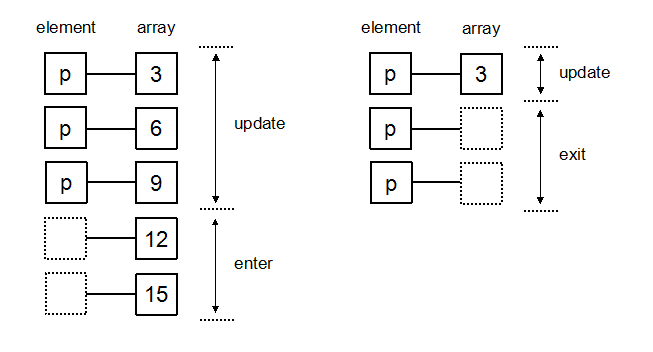

Chapter 01 · Data
第 1 章 数据
从 DeepSeek 合成的新生数据出发，把「数据是什么」拆成四件可操作的事：怎么装载、怎么定义、怎么分类、怎么变换。 Starting from a DeepSeek-synthesized freshman dataset, breaking 'what is data' into four actionable tasks: loading, defining, classifying and transforming.
学完这一章，你应该能够 By the end of this chapter you should be able to
- 说清 DIKW 金字塔的四级，并指出可视化主要停在「信息」这一级，很难跨到「智慧」Explain the four levels of the DIKW pyramid and why visualization mostly stops at Information
- 用 Stevens 的 4 种测量尺度给一列字段分类，并识别出区间尺度没有真零点Classify fields with Stevens' four measurement scales and spot that interval scales have no true zero
- 按 Mackinlay 的通道排名把属性映射到合适的视觉通道，并说出错配会丢什么信息Map attributes onto visual channels using Mackinlay's ranking, and say what information a mismatch loses
- 用 d3.csv 的 row 回调，一行代码完成「加载 + 字段映射 + 类型转换」Use d3.csv's row callback to do loading, field mapping and type conversion in one line
- 用 enter / update / exit 三态解释数据变化时 DOM 发生了什么，并说明 key 函数为什么是过渡动画的前提Explain the enter / update / exit model and why a key function is a prerequisite for smooth transitions
前置知识Prerequisites： 会写基础 JavaScript（变量、函数、数组）。不需要任何可视化基础。 Basic JavaScript (variables, functions, arrays). No visualization background required.
数据生成数据生成
你的原案例
Your Original Case
本章采用中国石油大学（华东）2025 级新生数据，阐述数据的特性。为了防止数据隐私泄露，数据采用 DeepSeek 大模型生成。数据文件 data/newstudent.csv，含 80 条记录。
This chapter uses the 2025 new-student data from China University of Petroleum (East China) to illustrate the characteristics of data. To prevent data privacy leaks, the data was generated by the DeepSeek large language model. The data file data/newstudent.csv contains 80 records.
嵌入理论：AI 合成数据的可信度边界
Embedded Theory: The Trustworthiness Boundary of AI-Synthesized Data
数据质量四维度（Wang & Strong 1996）：准确性 / 完整性 / 一致性 / 时效性。
Four Dimensions of Data Quality (Wang & Strong 1996): Accuracy / Completeness / Consistency / Timeliness.
DeepSeek 生成数据：
Data Generated by DeepSeek:
- ✅ 完整性：字段齐全
- ✅ Completeness: all fields present
- ⚠️ 准确性：姓名/籍贯是虚构的，不能用作真实人口分析
- ⚠️ Accuracy: names/hometowns are fictional and cannot be used for real demographic analysis
- ⚠️ 采样偏差：模型倾向"看起来合理"的分布（如民族偏汉族、籍贯偏大城市）
- ⚠️ Sampling bias: the model tends toward 'plausible-looking' distributions (e.g., over-representing the Han ethnicity, favoring large cities for hometowns)
课堂要点：教学场景使用合成数据没问题，但必须标注"合成数据"，避免学生误以为真实分布。
Classroom Takeaway: Using synthetic data in teaching is fine, but it must be labeled as 'synthetic data' to prevent students from mistaking it for a real distribution.
关键代码 ① 字段名映射
Key Code ① Field Name Mapping
中文列名映射成英文变量名 —— 避免 JS 中带中文 key 引发语法/编码隐患。
Map Chinese column names to English variable names — to avoid syntax/encoding issues caused by Chinese keys in JS.
⭐ // 关键点 ①：字段映射 —— 中文 → 英文
const COLUMN_MAP = {
"序号": "id",
"姓名": "name",
"性别": "gender",
"生日": "birthday",
"年龄": "age",
"班级": "class",
};关键点解释：为什么不用中文 key？ (1) JS 引擎对中文标识符的容错性差（老浏览器报错）；(2) 后端、JSON、URL 编码都可能引入乱码； (3) IDE 自动补全、搜索、重构工具对中文支持不一致。 最佳实践：CSV 用人可读的中文名，JS 内部统一英文变量。
Key-Point Explanation: Why not use Chinese keys? (1) JS engines have poor tolerance for Chinese identifiers (older browsers throw errors); (2) backends, JSON, and URL encoding may introduce mojibake; (3) IDE autocomplete, search, and refactoring tools have inconsistent support for Chinese. Best Practice: Use human-readable Chinese names in CSV, and use unified English variables internally in JS.
关键代码 ② 类型转换函数
Key Code ② Type Conversion Functions
CSV 加载后所有字段都是字符串，需要把序号/年龄 → Number，生日 → Date 对象。
After CSV loading, all fields are strings; you need to convert the index/age to Number and the birthday to a Date object.
⭐ // 关键点 ②：类型转换函数 —— 用户原文「推荐方式」
function transformRow(d) {
return {
id: +d["序号"], // 一元 + 把字符串转 Number
name: d["姓名"].trim(), // trim() 去掉首尾空白
birthday: new Date(d["生日"]), // 字符串 → Date 对象
age: +d["年龄"],
class: d["班级"].trim(),
};
}
关键点解释：
+d["年龄"] 是一元加运算符，是 JS 里把字符串转数字的最快写法（比 Number() / parseInt() 都短）；
new Date(str) 能解析 "2007-08-15" 这类 ISO 格式，但对 "2007/8/15" 兼容性差，要用 d3.timeParse("%Y-%m-%d") 兜底。
坑：没有 trim() 的话，"软件工程1班 " 里的空格会让后续过滤/聚合出错。
Key-Point Explanation:
+d["年龄"] is the unary plus operator, the fastest way in JS to convert a string to a number (shorter than Number() / parseInt());
new Date(str) can parse ISO formats like "2007-08-15", but has poor compatibility with "2007/8/15", so fall back to d3.timeParse("%Y-%m-%d").
Pitfall: Without trim(), the trailing space in "软件工程1班 " will cause later filtering/aggregation to fail.
关键代码 ③ d3.csv 第二参直接传 row 回调
Key Code ③ Pass the row callback directly as the second argument of d3.csv
⭐ // 关键点 ③：一行完成加载 + 转换（用户原文「代码示例 1」）
const data = await d3.csv("data/newstudent.csv", transformRow);
// 验证类型确实转换了：
console.log(typeof data[0].age); // "number"
console.log(data[0].birthday instanceof Date); // true
关键点解释：d3.csv 是异步函数，必须 await。
第二参的 row 回调会在每一行解析后立即调用——比先 await d3.csv(...) 再 .map(transformRow) 更省内存（边读边转）。
异步加载的意义：不阻塞页面渲染，用户能继续交互。
Key-Point Explanation: d3.csv is an asynchronous function and must be awaited.
The row callback in the second argument is invoked immediately after each row is parsed — which saves memory compared to first await d3.csv(...) then .map(transformRow) (transform while reading).
Significance of Asynchronous Loading: It does not block page rendering, so the user can keep interacting.
点击「重新加载」查看 CSV 异步加载、字段映射、类型转换 → 输出转换后表格 + 控制台日志。
Click 'Reload' to see the asynchronous CSV loading, field mapping, and type conversion → output the transformed table + console logs.
数据定义数据定义
你的原案例
Your Original Case
DI 金 W 金字塔：数据是"原始原始数据"，信息是"组织好的数据"，知识是"模式/规律"，智慧是"判断/战略"。
DIKW Pyramid: Data is 'raw data', Information is 'organized data', Knowledge is 'patterns/regularities', and Wisdom is 'judgment/strategy'.
| 层 | 原文 | 回答的问题 |
|---|---|---|
| 数据 | 原始、离散的观察结果 | — |
| 信息 | 经过处理、组织、赋予上下文的数据 | 谁 / 什么 / 何时 / 何地 |
| 知识 | 对信息的进一步提炼和理解 | 如何 |
| 智慧 | 运用知识做出明智判断和战略决策 | 为什么 / 应该怎么做 |
| Tier | Term | Question Answered |
|---|---|---|
| Data | Raw, discrete observations | — |
| Information | Data that has been processed, organized, and given context | Who / What / When / Where |
| Knowledge | Further refinement and understanding of information | How |
| Wisdom | Applying knowledge to make wise judgments and strategic decisions | Why / What to do |
嵌入理论：可视化在 DIKW 中的位置
Embedded Theory: The Position of Visualization in the DIKW Model
关键洞见：可视化主要把 Data 升到 Information，少数场景能升到 Knowledge，但难以跨越到 Wisdom。
Key Insight: Visualization mainly lifts Data to Information; in a few scenarios it can reach Knowledge, but it is difficult to cross over to Wisdom.
- ✅ Data → Information：把表格"翻译"成可读图形（折线图、柱状图、热图）
- ✅ Data → Information: 'Translate' the table into readable graphics (line chart, bar chart, heatmap)
- ⚠️ Information → Knowledge：模式发现需要统计模型辅助（机器学习）
- ⚠️ Information → Knowledge: Pattern discovery requires statistical models (machine learning)
- ❌ Knowledge → Wisdom：决策与战略超出可视化能力
- ❌ Knowledge → Wisdom: Decisions and strategy are beyond the capability of visualization
Rowley (2007) 批评：DIKW 是过度简化的层次模型，现实中 Data 与 Information 的界限模糊。但作为教学脚手架，仍然最有价值。
Rowley (2007) Critique: DIKW is an oversimplified hierarchical model; in reality the boundary between Data and Information is blurred. But as a teaching scaffold, it remains most valuable.
关键代码 ① SVG 金字塔路径
Key Code ① SVG Pyramid Path
金字塔由 4 个 trapezoid 拼接而成 —— D3 path 的 d 属性。
The pyramid is composed of 4 trapezoids joined together — the d attribute of the D3 path.
⭐ // 关键点 ①：trapezoid 路径 —— 从上到下 4 个点的连线
const topW = 60, botW = 120;
const yTop = 20, yBot = 100;
const path = `
M ${cx - topW/2} ${yTop}
L ${cx + topW/2} ${yTop}
L ${cx + botW/2} ${yBot}
L ${cx - botW/2} ${yBot}
Z
`;
关键点解释：SVG path 的 M(moveto)、L(lineto)、Z(close) 是 3 个最常用指令。
模板字符串 `${...}` 可以直接嵌入 JS 变量，比字符串拼接更可读。
实践：复杂形状用 D3 的 d3.symbol()（内置 ★●▲ 等），自己 path 容易出错。
Key-Point Explanation: The SVG path commands M (moveto), L (lineto), and Z (close) are the three most commonly used.
Template literals `${...}` can embed JS variables directly, making them more readable than string concatenation.
Practice: For complex shapes, use D3's d3.symbol() (which has built-in ★●▲ etc.); hand-writing paths is error-prone.
关键代码 ② 交互高亮（hover/click）
Key Code ② Interactive Highlighting (hover/click)
⭐ // 关键点 ②：选择集绑定事件 —— D3 的事件模型
const g = svg.append("g")
.style("cursor", "pointer")
.on("mouseover", function() { // 注意 function 而非箭头函数
d3.select(this).select("path")
.transition().duration(150)
.attr("fill", d3.color(layer.color).brighter(0.5));
})
.on("click", () => showDetail(layer));
关键点解释：必须用 function() 而非箭头函数——
因为 D3 回调里要用 this 访问当前元素，箭头函数会捕获外层 this 导致失效。这是 D3 最常见的坑。
transition().duration() 是 D3 内置动画 API，比 jQuery 还简洁。
Key-Point Explanation: You must use function() instead of arrow functions —
because D3 callbacks use this to access the current element, and arrow functions capture the outer this, causing it to fail. This is the most common D3 pitfall.
transition().duration() is D3's built-in animation API, even more concise than jQuery.
鼠标悬停金字塔 → 高亮该层 · 点击 → 右侧显示该层定义 / 示例 / 常用可视化
Hover over the pyramid → highlight that tier · click → show that tier's definition / examples / common visualizations on the right
数据属性数据属性
你的原案例（3 大类）
Your Original Case (3 Categories)
你的原文给出 3 类属性：
Your original text gives 3 types of attributes:
- 类别型属性：符号或名称，无顺序关系（性别、姓名）
- Categorical Attribute: a symbol or name with no ordering (gender, name)
- 序数型属性：属性值有顺序（学位：本科/硕士/博士）
- Ordinal Attribute: attribute values have an order (degree: bachelor's/master's/doctorate)
- 数值型属性：定量方法（年龄、价格）
- Numerical Attribute: quantitative method (age, price)
嵌入理论：Stevens 测量尺度（1946）—— 4 类
Embedded Theory: Stevens Measurement Scales (1946) — 4 Types
Stevens 把测量尺度分为 4 类，比你的原文更精细：
Stevens divides measurement scales into 4 types, finer than your original text:
| 类别 | 允许的运算 | 典型示例 | 对应你原文 |
|---|---|---|---|
| 名义 Nominal | 等价 / 不等价 | 姓名、性别 | 类别型 |
| 序数 Ordinal | + > < | 等级、班级序号 | 序数型 |
| 区间 Interval | + 加减 | 温度（°C） | — |
| 比率 Ratio | + 加减乘除 | 年龄、价格 | 数值型 |
| Category | Allowed Operations | Typical Example | Maps to Your Original |
|---|---|---|---|
| Nominal | Equivalence / Non-equivalence | Name, Gender | Categorical |
| Ordinal | + > < | Rank, Class index | Ordinal |
| Interval | + Add/Subtract | Temperature (°C) | — |
| Ratio | + Add/Subtract/Multiply/Divide | Age, Price | Numerical |
关键区别：区间尺度没有"真零点"（0°C 不是"没有温度"）；比率尺度有真零点（0 元 = 没有钱）。
Key Difference: The interval scale has no 'true zero point' (0°C is not 'no temperature'); the ratio scale has a true zero (0 yuan = no money).
嵌入理论：Mackinlay 视觉通道排序（1986）
Embedded Theory: Mackinlay Visual Channel Ranking (1986)
Mackinlay 提出视觉通道分 3 档：
Mackinlay proposes dividing visual channels into 3 tiers:
| 档次 | 通道 | 适合的属性 |
|---|---|---|
| 定量型 | 位置、长度、角度 | 比率 / 区间 |
| 顺序型 | 亮度、密度、饱和度 | 序数 |
| 定性型 | 色相、形状 | 名义 |
| Tier | Channel | Suitable Attribute |
|---|---|---|
| Quantitative | Position, Length, Angle | Ratio / Interval |
| Ordered | Brightness, Density, Saturation | Ordinal |
| Qualitative | Hue, Shape | Nominal |
核心发现：位置是最强的定量通道；色相是最强的定性通道。错配 → 信息丢失。
Core Finding: Position is the strongest quantitative channel; hue is the strongest qualitative channel. Mismatch → information loss.
关键代码 ① 比例尺选型
Key Code ① Scale Selection
⭐ // 关键点 ①：scale 选型 —— 属性 ↔ 通道的映射
// 比率型数据 → scaleLinear（连续定量）
const x = d3.scaleLinear().domain([0, 100]).range([0, 800]);
// 名义/序数型数据 → scaleBand（离散分类）
const x = d3.scaleBand().domain(["软件1班", "软件2班"]).range([0, 800]);
关键点解释：D3 比例尺的 domain() 是数据域（输入），range() 是值域（输出像素）。
选错比例尺是初学者最常犯的错：类别数据用 scaleLinear 会算出没有意义的中间值（如 0.5 班）。
记忆口诀：连续定量用 Linear，离散分类用 Band，序数可用 Point。
Key-Point Explanation: A D3 scale's domain() is the data domain (input) and range() is the value range (output pixels).
Choosing the wrong scale is the most common beginner mistake: using scaleLinear for categorical data produces meaningless intermediate values (e.g., class 0.5).
Memory Aid: Use Linear for continuous quantitative, Band for discrete categorical, and Point for ordinal.
关键代码 ② colormap 选型
Key Code ② Colormap Selection
⭐ // 关键点 ②：颜色映射 —— 顺序型 vs 定性型 vs 发散型
// 顺序型（顺序有意义）→ interpolateViridis / interpolateBlues
const color = d3.scaleSequential(d3.interpolateViridis);
// 定性型（无顺序）→ schemeTableau10
const color = d3.scaleOrdinal().range(d3.schemeTableau10);
// 发散型（有中点）→ interpolateRdBu
const color = d3.scaleDiverging(d3.interpolateRdBu);
关键点解释：Viridis 是顺序 colormap 的标杆，色觉缺陷（CVD）友好且感知均匀。
常见错误：用彩虹色 interpolateRainbow 编码数值数据 —— 既不 CVD 友好，又有假边界（蓝色→绿色跳跃）。
课堂提问：什么时候用发散型？答：有"中间值"的数据（如正负、温度 vs 平均值）。
Key-Point Explanation: Viridis is the benchmark sequential colormap — color-vision-deficiency (CVD) friendly and perceptually uniform.
Common Mistake: Using the rainbow colormap interpolateRainbow to encode numerical data — it is neither CVD-friendly nor free of false boundaries (blue→green jumps).
Class Question: When to use a diverging colormap? Answer: Data that has a 'middle value' (e.g., positive/negative, temperature vs. average).
4 个 sub-demo：① 类别用色相（✓）② 序数用亮度（✓）③ 数值用位置（✓）④ ❌ 数值用色相（错配，看不出大小关系）
4 sub-demos: ① Categorical uses hue (✓) ② Ordinal uses brightness (✓) ③ Numerical uses position (✓) ④ ❌ Numerical uses hue (mismatch — cannot tell magnitude)
数据变换数据变换
你的原案例（8 个函数）
Your Original Case (8 Functions)
你的原文列出 D3 提供的 8 个常见函数：
Your original text lists 8 common functions provided by D3:
map(iterable, mapper)—— 类似 Array.mapmap(iterable, mapper)— similar to Array.mapreduce(iterable, reducer, init)—— 类似 Array.reducereduce(iterable, reducer, init)— similar to Array.reducecross(...iterables, reducer)—— 笛卡尔积cross(...iterables, reducer)— Cartesian productmerge(iterables)—— 合并为扁平数组merge(iterables)— merge into a flat arraypairs(iterable, reducer)—— 相邻元素对pairs(iterable, reducer)— adjacent element pairstranspose(matrix)—— 矩阵转置transpose(matrix)— matrix transposezip(...arrays)—— 按位合并zip(...arrays)— combine by positionfilter(iterable, test)—— 类似 Array.filterfilter(iterable, test)— similar to Array.filter
嵌入理论：函数式数据流
Embedded Theory: Functional Data Flow
这 8 个函数的共同特点：
Common characteristics of these 8 functions:
- ✅ 不可变（immutable）：输入不变，返回新数组
- ✅ Immutable: input unchanged, returns a new array
- ✅ 纯函数：相同输入 → 相同输出，无副作用
- ✅ Pure function: same input → same output, no side effects
- ✅ 可链式：返回值是数组，可以接下一层变换
- ✅ Chainable: returns an array, can be followed by the next transformation
为什么函数式？
Why Functional?
- 可推理：每层变换独立可测
- Can be reasoned about: each transformation layer is independent and testable
- 可并行：map/reduce/filter 天然支持并行化
- Parallelizable: map/reduce/filter are naturally parallelizable
- 可缓存：纯函数的输出可以记忆化
- Cacheable: outputs of pure functions can be memoized
数据立方体（OLAP）雏形：transpose 做宽/长格式转换，group + rollup 做切片/切块/钻取 —— 这正是 BI 系统的核心。
The Prototype of the Data Cube (OLAP): transpose performs wide/long format conversion, and group + rollup performs slicing/dicing/drilling — this is exactly the core of BI systems.
关键代码 ① map / reduce 的链式组合
Key Code ① Chained Composition of map / reduce
⭐ // 关键点 ①：函数式数据流 —— map 后接 filter 再 reduce
const avgAge =
students
.filter(s => s.gender === "男") // ① 过滤男生
.map(s => s.age) // ② 提取年龄
.reduce((sum, a) => sum + a, 0) // ③ 合计
/ students.filter(s => s.gender === "男").length; // ④ 求平均关键点解释：链式调用的每一步返回新数组，不会修改原数组。 与命令式对比：命令式需要 4 个临时变量 + 一个 for 循环，函数式一行搞定。 性能权衡：每次 map/filter 都会创建新数组，对超大数组有性能损耗（百万级以上才显著）。
Key-Point Explanation: Each step of the chained call returns a new array and does not modify the original array. Compared with Imperative: The imperative style needs 4 temporary variables + a for loop, while the functional style does it in one line. Performance Trade-off: Each map/filter creates a new array, which incurs a performance cost for very large arrays (only significant above the million level).
关键代码 ② cross（笛卡尔积）
Key Code ② cross (Cartesian Product)
⭐ // 关键点 ②：cross —— 笛卡尔积，用于两两组合
const genders = ["男", "女"];
const majors = ["软件工程", "数据科学"];
const combos = d3.cross(genders, majors);
// → [["男","软件工程"], ["男","数据科学"], ["女","软件工程"], ["女","数据科学"]]关键点解释：笛卡尔积常用在"两两组合"分析（如性别 × 专业的人数统计）。 第二参 reducer 可选，用来"合并"两个元素。 扩展：3 个数组的笛卡尔积是 8 种，n 个数组的笛卡尔积是乘积大小。
Key-Point Explanation: The Cartesian product is commonly used in 'pairwise combination' analysis (e.g., counting students by gender × major). The second reducer argument is optional and is used to 'combine' the two elements. Extension: The Cartesian product of 3 arrays yields 8 combinations; for n arrays it is the product of their sizes.
关键代码 ③ group / rollup（聚合）
Key Code ③ group / rollup (Aggregation)
⭐ // 关键点 ③：group 与 rollup —— 层次聚合
// group 返回 Map（保留所有元素）
const byClass = d3.group(students, s => s.class);
// rollup 返回 Map（每个 key 只保留聚合值）
const countByClass = d3.rollup(
students,
v => v.length,
s => s.class
);
关键点解释：group vs rollup 是"分组保留"vs"分组聚合"的区别。
rollup 第二参是 reducer 函数（这里取长度），后续章节 doc-02 会详细用 rollup 做树形数据。
Key-Point Explanation: group vs rollup is the difference between 'keep groups' and 'aggregate groups'.
The second argument of rollup is a reducer function (here it takes the length); in later chapter doc-02, rollup will be used in detail for tree-structured data.
下拉切换 8 个函数，右侧显示输入/输出对照 + 真实场景（新生数据）
Use the dropdown to switch among the 8 functions; the right side shows input/output comparison + a real scenario (new-student data)
D3 数据选择器D3 数据选择器
你的原案例（6 个选择器方法）
Your Original Case (6 Selector Methods)
你的原文梳理了 6 个选择器方法：
Your original text outlines 6 selector methods:
| 方法 | 返回 |
|---|---|
d3.select | 单个元素 |
d3.selectAll | 多个元素的 selection |
selection.select | 每个选中元素的后代中第一个 |
selection.selectAll | 后代中所有 |
selection.selectChild | 直接子元素第一个 |
selection.selectChildren | 所有直接子元素 |
| Method | Returns |
|---|---|
d3.select | single element |
d3.selectAll | selection of multiple elements |
selection.select | the first descendant of each selected element |
selection.selectAll | all descendants |
selection.selectChild | the first direct child element |
selection.selectChildren | all direct child elements |
嵌入理论：Data-Join 三态模型（Mike Bostock）
Embedded Theory: The Data-Join Three-State Model (Mike Bostock)
D3 的核心是 Data-Join：把数据数组"绑定"到 DOM 元素上。
The core of D3 is Data-Join: 'binding' a data array to DOM elements.
当数据变化时：
When the data changes:
- 新数据 > 旧数据：多出来的进入 enter（要 append）
- New data > old data: the extras enter enter (need to append)
- 新数据 = 旧数据：原有元素进入 update（要改属性）
- New data = old data: the existing elements enter update (need attribute changes)
- 新数据 < 旧数据：多余的元素进入 exit（要 remove）
- New data < old data: the surplus elements enter exit (need to remove)

Data-Join vs 命令式 DOM
Data-Join vs Imperative DOM
| 命令式 | 声明式（Data-Join） |
|---|---|
createElement 后逐个 append | .data(arr).join(...) 一行 |
| 全量重绘 | 增量更新（性能好） |
| 元素身份丢失 | key 函数保留稳定身份（动画自然） |
| 与数据流脱节 | 与函数式数据流天然契合 |
| Imperative | Declarative (Data-Join) |
|---|---|
createElement then append one by one | .data(arr).join(...) in one line |
| full re-render | incremental update (better performance) |
| element identity lost | key function preserves stable identity (natural animation) |
| disconnected from the data flow | naturally fits the functional data flow |
关键代码 ① .join(enter, update, exit) 三态
Key Code ① .join(enter, update, exit) Three States
⭐ // 关键点 ①：D3 v5+ 的 join() API —— 优雅处理三态
const circles = svg.selectAll("circle")
.data(currentData)
.join(
enter => enter.append("circle").attr("fill", "green"), // enter
update => update.attr("fill", "cyan"), // update
exit => exit.remove() // exit
);
关键点解释：join 的三个回调分别在 enter / update / exit 阶段被调用。
这种"声明式三态"比 v3 的 enter().append() + exit().remove() 写法更简洁，逻辑更不易出错。
类比：React 的 diff + patch —— 同样思想，但 React 帮你做了，D3 让你自己写变换函数。
Key-Point Explanation: The three callbacks of join are invoked in the enter / update / exit phases respectively.
This 'declarative three-state' pattern is more concise than the v3 enter().append() + exit().remove() style, and less error-prone.
Analogy: React's diff + patch — the same idea, but React does it for you, while D3 lets you write the transformation functions yourself.
关键代码 ② key 函数保身份
Key Code ② key Function Preserves Identity
⭐ // 关键点 ②：key 函数 —— 元素身份的稳定器
// ❌ 不带 key：数据顺序变化 → 所有元素都"update"，过渡动画错乱
svg.selectAll("circle").data(newData);
// ✅ 带 key：用唯一字段绑定身份，元素"知道自己是哪个"
svg.selectAll("circle").data(newData, d => d.id);
// 同样的逻辑用 React 描述：key={item.id}
关键点解释：key 函数是 D3 动画的灵魂。
没有 key 时，D3 按 index 绑定身份：数据重排会导致"所有元素都换位置"。
带 key 后，每个 circle 知道自己的 id 是什么，重排时只是 cx 变化，过渡动画自然。
类比：与 React 的 key={item.id} 完全相同的思想。
Key-Point Explanation: The key function is the soul of D3 animation.
Without a key, D3 binds identity by index: reordering data causes 'all elements to move'.
With a key, each circle knows its id, and on reorder only cx changes, so the transition animation is natural.
Analogy: Exactly the same idea as React's key={item.id}.
关键代码 ③ d3.select vs d3.selectAll
Key Code ③ d3.select vs d3.selectAll
⭐ // 关键点 ③：选择器的核心区别
// select：返回 1 个元素（第一个匹配）；数据绑定只对这一个元素
const title = d3.select("#title");
// selectAll：返回多个元素；数据绑定按顺序一一对应
const bars = d3.selectAll(".bar").data(values);
关键点解释：select 用于"操作单个元素"，selectAll 用于"批量绑定数据"。
常见错误：用 selectAll(".bar") 给一个数组绑定数据时，元素数量与数据数量必须匹配，否则会"留空"或"溢出"。
最佳实践：先用 selectAll 创建占位元素（可能为空），再 .data().join(...)。
Key-Point Explanation: select is used to 'operate on a single element', and selectAll is used to 'bind data in bulk'.
Common Mistake: When using selectAll(".bar") to bind data to an array, the number of elements must match the number of data items, otherwise it will 'leave gaps' or 'overflow'.
Best Practice: First use selectAll to create placeholder elements (possibly empty), then .data().join(...).
点击按钮触发 enter (绿) / update (蓝) / exit (红)，观察三态切换
Click the button to trigger enter (green) / update (blue) / exit (red), and observe the three-state switching